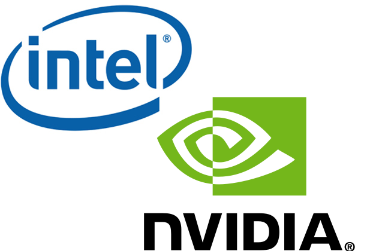
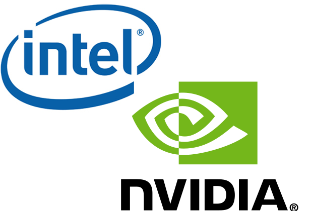
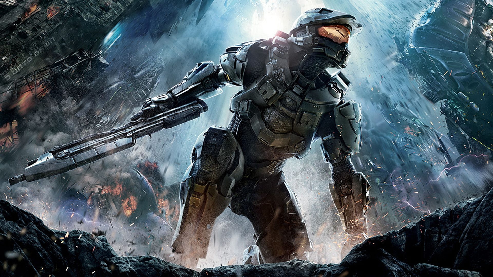
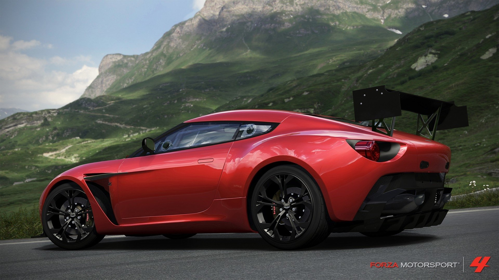
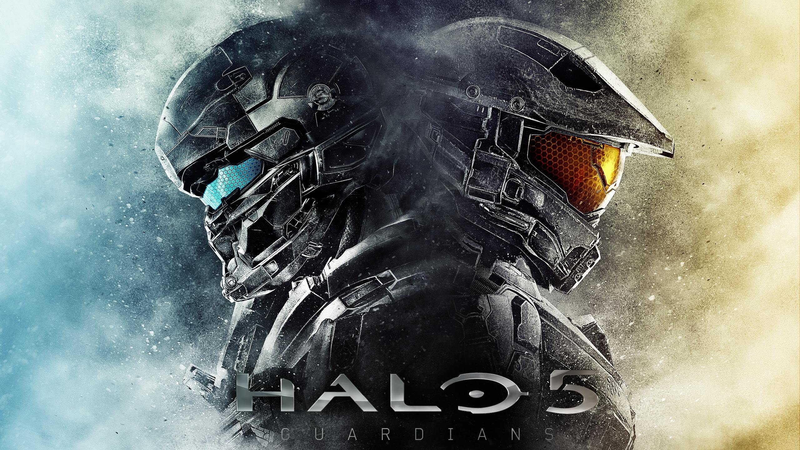
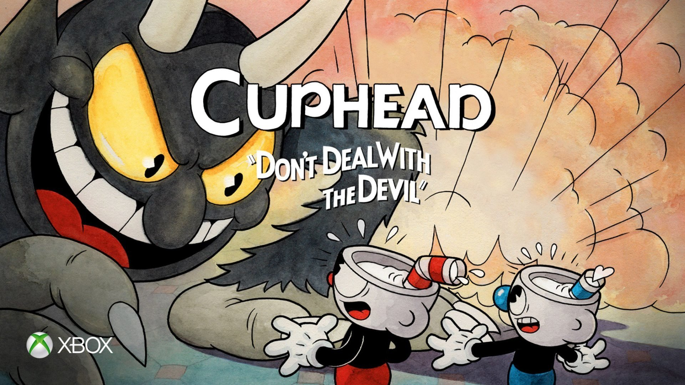
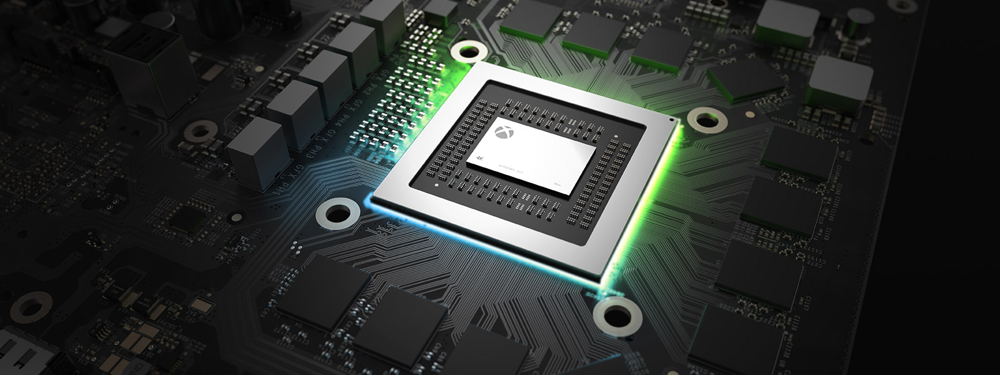

¿Qué es Xbox? : Xbox fue la primera videoconsola de sobremesa producida por Microsoft, en colaboración con Intel y Nvidia. 
¿Qué es Xbox? : Xbox fue la primera videoconsola de sobremesa producida por Microsoft, en colaboración con Intel y Nvidia. 
Historia de XBOX:
. XBOX:
Xbox fue la primera videoconsola de sobremesa producida por Microsoft,
en colaboración con Intel y Nvidia. Su principal característica es su procesador central basado en el procesador Intel Pentium III.
El sistema también incorpora un lector de DVD, un disco duro interno,
puerto ethernet y por último el sistema dispone de cuatro conectores para los mandos. Y unos de sus juegos exclusivos con mas ventas fue Halo

. XBOX 360:
Cuatro años después, el 22 de noviembre de 2005, Microsoft lanzó su Xbox de segunda generación, llamado Xbox 360,
la primera consola diseñada desde cero con gráficos de alta resolución.
El Xbox 360 le ganó por un año al PlayStation 3 y al Ninetendo Wii, que salieron en noviembre de 2006. Tuvo una buena lista de juegos exclusivos como FABLE, GEARS OF WARS, FORZA MOTOSPORT, y entre otros éxitos

. XBOX ONE:
Xbox One es la tercera videoconsola de sobremesa de la marca Xbox, producida por Microsoft.
Forma parte de las videoconsolas de octava generación,
fue presentada por Microsoft el 21 de mayo de 2013.
Es la sucesora de la Xbox 360 y actualmente compite con PlayStation 4 de Sony y Wii U de Nintendo. Sus mejores juegos exclusivos son:HALO 5, FORZA MOTOSPORT 7, RYSE: SON OF ROME, TITANFALL, SUNSET OVERDRIVE, FORZA HORIZON 3 entre otros

. XBOX ONE X:
La nueva consola anunciada el 10 de junio de 2017 en la E3 2017 y conocida inicialmente como "Project Scorpio".
Microsoft anunció una actualización de hardware de Xbox One con el nombre de "Xbox One X", que sería lanzada en noviembre de 2017.
La consola es un modelo con hardware actualizado destinado a apoyar el juego 4K, así como la realidad virtual.
Todos los juegos y accesorios Xbox One existentes serán compatibles con la consola "Xbox One X".
El jefe de la división de Xbox, Phil Spencer, afirmó que Scorpio fue diseñado como una respuesta al crecimiento del juego 4K y VR en el mercado de los ordenadores personales,
y que los juegos existentes de Xbox One experimentarán mejoras en el rendimiento.
Spencer indicaba en un ejemplo que Halo 5: Guardians,
que utiliza un sistema de escalado que reduce dinámicamente la resolución del juego cuando es necesario para mantener una tasa de cuadros consistente,
sería capaz de ejecutarse a su resolución nativa sin interrupciones en Scorpio. Algunos de sus juegos exclusivos son Crackdown 3, Cuphead, Forza Motorsport 7, Ori and the Will of the Wisps, Sea of Thieves, State of Decay 2 y Super Lucky’s Tale.

. Caracteristicas sobre Xbox ONE X::
Microsoft bautizó a Xbox One X como "la consola más potente jamás creada",
ya que además de los 6 teraflops de rendimiento gráfico, la consola contará con dos módulos de CPU Jaguar Evolved de cuatro núcleos cada uno a 2,3GHz,
memoria RAM de 12GB GDDR5 a 320 Gbit/s de ancho de banda y una GPU de 40 unidades de computación a 1.172 MHz,
lo que le permitirá ofrecer una resolución a 4K nativa en muchos de sus juegos.

Sorpresa!